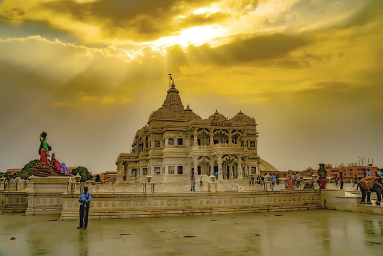
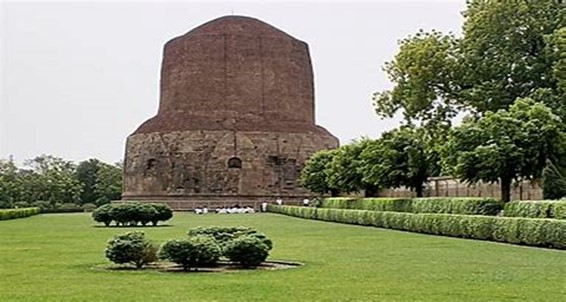
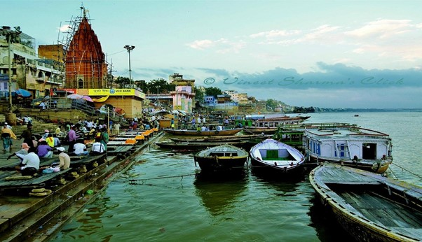

VARANASI

Varanasi, also known as Kashi or Banaras, is one of the oldest continuously inhabited cities in the world and a major pilgrimage site for Hindus. Situated on the banks of the sacred Ganges River in the northern state of Uttar Pradesh, Varanasi is revered as the spiritual capital of India, where ancient traditions, rituals, and beliefs converge. The city is famous for its ghats (riverfront steps) where pilgrims perform sacred rituals, including the Ganga Aarti, a mesmerizing evening ceremony dedicated to the river goddess Ganga. Varanasi is also renowned for its numerous temples, narrow winding lanes,
and bustling bazaars, offering visitors a glimpse into the vibrant tapestry of Indian culture and spirituality.

Places near by:
1.Sarnath :
The Dhamekha stupa and other imposing structures adorn this holy site where Buddha first preached his message.
2.Banaras Ghats :
One of the oldest cities of India, Banaras acts as an important religious center. The numerous bathing ghats (steps) along the bank of the Ganges attract huge crowds of pilgrims.
3.Durga Temple(Monkey temple) :
Durga temple is also known as the Monkey temple (because of the presence of huge number of monkeys), situated in the Durga Kund, Varanasi. The temple is dedicated to the Goddess Durga. It was built in the 18th century. Durga temple was constructed by a Bengali Maharani in the north Indian Style with multi tiered shikhara. An attractive pond known as the Durga Kund is made on the right side of the temple which really increases the beauty of the temple. The pond has stone stairs at all sides as well as there is watch pillars at each corner of the pond..